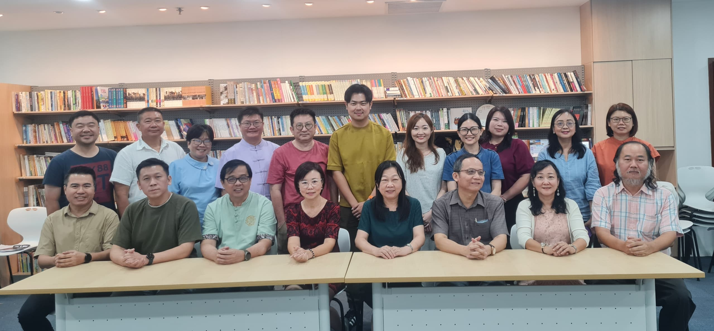

《华文教科书上的马华文学（国中篇）》
文学鉴赏读本，可连接课程与阅读页。
RM xxMalaysia Chinese Writers Association
从作家、作品、课程、活动现场到历史档案，作协以文字保存时代回声，也让马华文学继续向新的读者生长。
口述历史、典藏记忆
连接过去，启迪未来
About Association
以文会友 · 以笔传心 · 以学促新
马来西亚华文作家协会（简称作协）自1978年成立以来，始终以推动华文文学的发展与传承为核心使命。四十余年来，作协不仅持续培育新生代写作者，也通过举办写作比赛、文学讲习班、学术研讨会及文学节等多元活动，拓展文学影响力，提升社会大众对文学的关注与认同。同时，积极推动书刊出版，系统整理与保存珍贵的文学史料，为马华文学的积累与传承奠定坚实基础。
在创作与阅读并重的发展方向下，作协近年来持续深化文学教育的推广工作。由作协主办的“深耕文学创作课程”至今已迈入第九届，成功培育一批稳定写作、持续耕耘的文学工作者。2025年12月推出的“扎根马华文学鉴赏班”，更吸引近300人踊跃报名参与，反映社会对文学阅读与教学专业化的高度需求。
课程以培养文学读者为目标，着力为站在教育第一线的教师注入能量，协助其提升学生的文学鉴赏与理解能力，进一步扩大文学教育的影响力。
从创作人才的培育、文学阅读的推广，到地方文化的书写与文学史料的保存，作协始终秉持扎根本土、放眼未来的理念，持续推动马华文学的发展，凝聚文学力量，为本地文学文化的传承与创新注入源源不断的活力。

Council
第21届（2025-2028年）理事会成员
会长伍燕翎博士
副会长胡清朝、周若鹏、吕育陶、方路
秘书长刘育龙
副秘书长蔡晓玲博士、林健文
财政郭紫薇博士
副财政兼宣传主任谢增英博士
出版与发行组主任谢依伦博士
研究、资料及译介组主任廖冰凌博士
联络与福利组主任林玉蓉
青年组主任郑羽伦
理事李鈜沬、招晓华、黄雯贞（心洁）、叶子欣、胡复兴、陈伟哲
Activity Updates
活动动态将来可串接 Facebook API 自动更新新帖子，并依分类进入对应内容。
Writer Columns
作家专栏分为理事文章、会员文章、青年作家与投稿入口。
Literary Award
旧网站资料显示，目前重点可先放上第 14 届海鸥青年文学奖。新版页面用暗色背景、金色灯影和颁奖典礼感来承载奖项，让文学奖看起来像协会的重要荣誉档案。
正式上线后，每一届可补上征稿办法、入围名单、得奖作品、评审名单、照片和作品阅读入口；没有资料的年份保持空白，不硬塞内容。
Bookshop
文学鉴赏读本，可连接课程与阅读页。
RM xx
马华乡土文学专题。
RM xxContact
马来西亚华文作家协会PERSATUAN PENULIS-PENULIS ALIRAN CHINA MALAYSIA
THE WRITERS ASSOCIATION OF CHINESE MEDIUM
地址作协活动中心
Unit 12-03, 1, Jln 19/3, Seksyen 19, 46300 Petaling Jaya, Selangor.
电邮mychinesewriters@gmail.com
面子书www.facebook.com/mychinesewriters